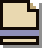

Built from Samara's own ask: the parchment that hangs from the band. It now drops from the shield, wears its kind's colour like sheet 64's tags, shows who is asking and where you'd go, and moves the way the download tray does. Live: press Replay.
Today
What you saw: no who, no why, appears at once.
auth.eu.shadow.tech wants to hand you over to Shadow PC.
Made clear
Drops from the shield. The tag says what kind of ask it is; the two faces say from where to where; one line says why.
You're signed in. Shadow's website is handing you back to its app on your Mac.
Camera and microphone
A call wants your camera. Green: something you use, nothing leaves without you.
Teams wants them for this call. They stop when you leave the call.
An installer from another site
Orange: an app installer can change your Mac. Yes takes a second to arm, so a stray click or A can't take it.

InstallerIt comes from objects.githubusercontent.com, not github.com. Only if you meant to get it.
A pop-up was caught
The shield glows blue and breathes three times, then rests, still faintly blue. Nothing drops down by itself.
...and when you click the shield
Then it asks: open the window it caught, or let this site open pop-ups from now on.
Pop-ups you didn't click are stopped. Open this one, or let accounts.example-shop.com open them.
A fake site: the full stop
The only one that takes the whole page: the page is boarded up, lit red from behind, the red shield large, the plate hung in front.
paypa1-account-check.com is on a list of fake login pages. Nothing on it was loaded.